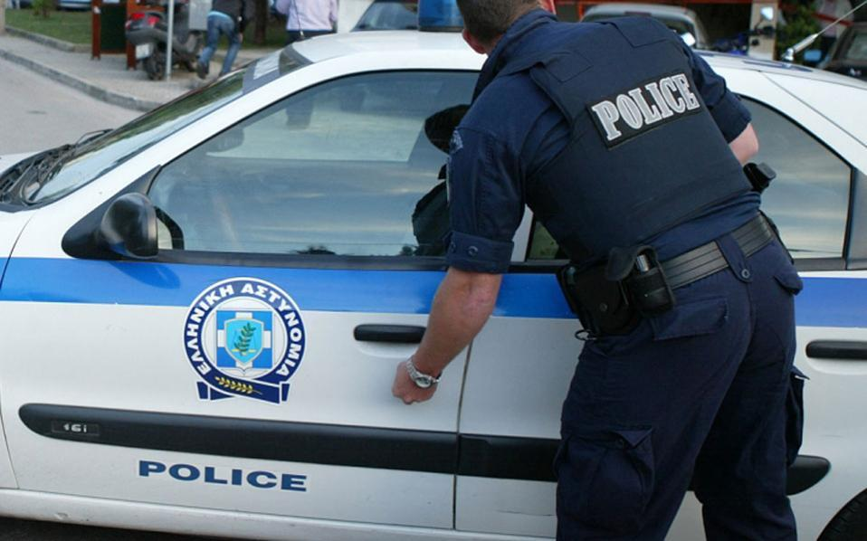

Weinig criminaliteit
Op Kos komt zeer weinig criminaliteit voor. Je kunt met een gerust hart overdag en ’s nachts overal over het eiland lopen, ook als vrouw alleen.
De criminaliteit die er is, is voornamelijk diefstal – vaak door toeristen zelf of door personen van buiten Kos. Let dus altijd goed op je telefoon en portemonnee.